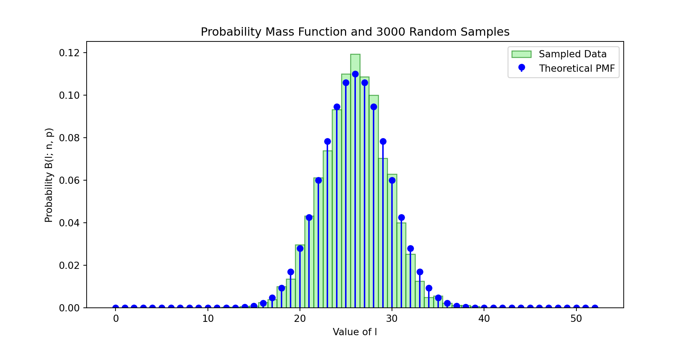
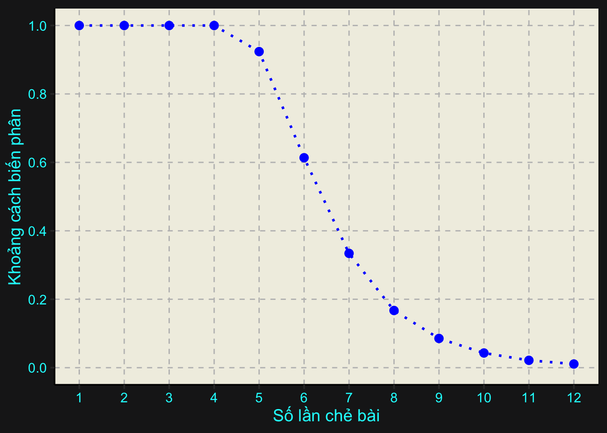

Bài viết này cung cấp một cái nhìn toán học đằng sau việc xáo trộn một bộ bài. Hơn nữa là đưa ra một cơ sở để trả lời cho câu hỏi: ‘’Một bộ bài cần xáo trộn bao nhiêu lần để được coi là ngẫu nhiên?’’.
Tips
Một bộ bài đi kèm có thể giúp trải nghiệm tốt hơn.
1 Hoán vị và sự sắp xếp lại
Trước tiên ta cần định nghĩa một số khái niệm. Với mỗi n\in\mathbb{N}^{*}, kí hiệu \llbracket n\rrbracket là tập tất cả các số tự nhiên từ 1 đến n.
Định nghĩa 1. Với mỗi n\in\mathbb{N}^{*}, một hoán vị \sigma là một song ánh \sigma\colon\llbracket n\rrbracket\to\llbracket n\rrbracket.
Kí hiệu tập tất cả các hoán vị (trên tập \llbracket n\rrbracket) là S_{n}. Dễ thấy rằng \left\vert S_{n}\right\vert=n!. Hơn nữa, hoán vị \sigma\colon\llbracket n\rrbracket\to\llbracket n\rrbracket có thể được viết dưới dạng
Hoặc chỉ gồm dòng thứ hai \sigma=\left(\sigma(1),\sigma(2),\ldots,\sigma(n)\right), trong đó hiểu rằng dòng đầu tiên được viết theo thứ tự tăng dần từ 1 đến n.
Bây giờ ta có một bộ bài gồm n lá bài, mỗi lá được gán nhãn lần lượt từ 1 đến n. Một trạng thái của bộ bài là một bộ có thứ tự các lá bài \left(x_{1},x_{2},\ldots,x_{n}\right), trong đó x_{i}\in\llbracket n\rrbracket và các lá bài trong bộ bài cũng theo thứ tự đó từ dưới lên trên. Việc sắp xếp lại thứ tự của n lá bài này chỉ là sự thay đổi thứ tự các phần tử của \llbracket n\rrbracket thành một thứ tự khác, nói cách khác, chính là một hoán vị.
Như vậy ta biết rằng một hoán vị sẽ tương ứng với một sự sắp xếp lại bộ bài nào đó (về sau ta gọi vắn tắt một lần sắp xếp lại thứ tự bộ bài tương ứng với hoán vị \sigma là sắp theo \sigma). Giả sử có hai lần sắp theo \pi và \tau. Ta sẽ chỉ ra rằng khi thực hiện lần lượt lần sắp theo \pi, và tiếp sau đó là sắp theo \tau, thì kết quả sẽ là một sự sắp theo \pi\circ\tau. Thực vậy, với mỗi i,j\in\llbracket n\rrbracket, sắp theo \pi làm lá bài đang ở vị trí thứ \pi(i) chuyển sang vị trí thứ i, tiếp sau đó là sắp theo \tau làm lá bài đang ở vị trí thứ \tau(j) chuyển sang vị trí thứ j. Cho i=\tau(j), sau hai lần sắp xếp, lá bài ban đầu ở vị trí thứ \pi(i)=\pi(\tau(j)) chuyển sang vị trí thứ j, hay chính là một lần sắp theo \pi\circ\tau.
Ta biết rằng tập S_{n} các hoán vị cùng với phép toán hợp thành \circ lập thành một nhóm. Nhóm \left(S_{n},\circ\right) không giao hoán với n\ge3. Do đó, nói chung, kết quả của việc thực hiện liên tiếp hai lần sắp xếp là khác nhau nếu ta thay đổi thứ tự của các lần sắp xếp.
Cần lưu ý mỗi hoán vị thể hiện cách một bộ bài thay đổi từ trạng thái này sang trạng thái khác. Chúng không thể hiện trực tiếp trạng thái trước hoặc sau khi sắp xếp của bộ bài (một trường hợp đặc biệt khi bộ bài đang ở trạng thái \left(1,2,\ldots,n\right), lúc này trạng thái của bộ bài ngay sau khi được sắp xếp lại theo hoán vị \sigma là \left(\sigma(1),\sigma(2),\ldots,\sigma(n)\right)).
2 Xáo bài
Tiếp theo, ta bổ sung yếu tố ‘’ngẫu nhiên’’ vào quá trình sắp xếp lại bộ bài. Ta có thể xem việc xáo bài (về trực giác, là một thao tác sắp xếp lại bộ bài một cách ngẫu nhiên) như một phân phối xác suất cho tương ứng mỗi cách sắp xếp lại bộ bài với xác suất (khả năng xuất hiện) của nó.
2.1 Phân phối của các hoán vị
Cụ thể, giả sử bộ bài ban đầu đang ở trạng thái \left(1,2,\ldots,n\right), ta áp dụng phương pháp xáo bài Q một số lần cho bộ bài (nghĩa là, sau khi xáo theo phương pháp Q, mỗi hoán vị \pi\in S_{n} có xác suất Q(\pi) để lần sắp xếp đó là sắp xếp theo \pi). Bắt đầu bằng việc sắp xếp theo hoán vị \varepsilon (phần tử đơn vị của nhóm \left(S_{n},\circ\right)), hành động này không làm thay đổi bộ bài so với trạng thái ban đầu. Tiếp theo, chọn ngẫu nhiên một hoán vị \pi_{1} với xác suất để \pi_{1} được chọn là Q(\pi_{1}) và sắp xếp lại bộ bài theo \pi_{1}. Tiếp tục, hoán vị \pi_{2} được chọn ngẫu nhiên với xác suất Q(\pi_{2}) và sắp xếp lại bộ bài theo \pi_{2}.
Bây giờ, ta xác định phân phối Q^{(2)} của \pi_{1}\circ\pi_{2}. Vẫn giả sử rằng các thao tác chọn ngẫu nhiên là độc lập và các hoán vị đều được lấy từ cùng một phân phối Q. Như vậy, xác suất để chọn ngẫu nhiên được hoán vị \pi_{1} và sau đó chọn ngẫu nhiên được hoán vị \pi_{2} là Q(\pi_{1})Q(\pi_{2}). Do đó ta nhận được phân phối xác suất của \pi_{1}\circ\pi_{2},
Biểu diễn \pi_{2}=\pi_{1}^{-1}\circ\pi, trong đó \pi_{1}^{-1} là nghịch đảo của \pi_{1} trong \left(S_{n},\circ\right). Khi đó ta có thể viết biểu thức trên dưới dạng tích chập như sau
Để ý rằng phân phối xác suất Q^{(k)} có thể được xác định chỉ dựa vào duy nhất phân phối Q^{(k-1)}. Điều này đưa ta đến một ngôn ngữ chính thức hơn, là xích Markov.
2.2 Xích Markov
Xét một dãy hữu hạn các biến ngẫu nhiên X_{0},X_{1},\ldots,X_{k}, mỗi biến ngẫu nhiên nhận giá trị trên S_{n} và Q\colon S_{n}\to\left[0,1\right] là phân phối xác suất của các biến ngẫu nhiên X_{i}, thoả mãn Q(\pi)\ge0 với mọi \pi\in S_{n} và \displaystyle\sum_{\pi\in S_{n}}Q(\pi)=1.
Tương tự như cách ta bắt đầu với bộ bài có trạng thái \left(1,2,\ldots,n\right). Giả sử X_{0} luôn nhận giá trị là phần tử đơn vị của nhóm \left(S_{n},\circ\right), tức là \mathbb{P}(X_{0}=\varepsilon)=1. Xem xét một số xác suất có điều kiện sau (có thể bỏ qua điều kiện X_{0}=\varepsilon)
Công thức Equation 3 thể hiện xác suất Q^{(k)} chỉ phụ thuộc vào xác suất Q^{(k-1)} ngay trước nó. Suy ra, với mọi i=1,2,\ldots,k và với mọi \pi_{1},\pi_{2},\ldots,\pi_{k}\in S_{n},
Như vậy việc xáo trộn (ngẫu nhiên) một bộ bài một số lần có thể được mô hình hoá thành một xích Markov.
2.3 Khoảng cách biến phân
Giả sử ta đã có một bộ bài được xáo trộn theo phương pháp Q một số lần. Bây giờ ta cần một phép đo để biết liệu rằng kết quả của phương pháp xáo bài này đang cách sự ngẫu nhiên bao xa. Trước hết, cần thống nhất về sự ngẫu nhiên, rằng kết quả được gọi là ngẫu nhiên nếu như mọi trạng thái của bộ bài đều có khả năng xuất hiện như nhau sau các lần xáo trộn. Để thể hiện điều này, ta gán một phân phối đều \mathcal{U} lên S_{n}, cụ thể, \mathcal{U}(\pi)=\left\vert S_{n}\right\vert^{-1}=\left(n!\right)^{-1}. Khi đó ta có thể đồng nhất xác suất để hoán vị \pi xuất hiện và xác suất để bộ bài ở trạng thái \left(\pi(1),\pi(2),\ldots,\pi(n)\right).
Ở đây ta đưa ra một công cụ để đo sự sai khác mà trong trường hợp này là của hai phân phối xác suất. Xét hai phân phối xác suất Q_{1} và Q_{2} trên S_{n}. Khoảng cách biến phân của Q_{1} và Q_{2} được định nghĩa bởi
Ta mong muốn đo được phân phối cuối cùng (sau k lần tích chập) của chúng ta cách phân phối đều “bao xa”, và mất “bao lâu” để Q^{(k)} đến đủ gần \mathcal{U}. Như vậy ta cần tính được khoảng cách biến phân của hai phân phối Q^{(k)} và \mathcal{U} trên S_{n}, chính là
Thực tế có nhiều cách xáo trộn một bộ bài. Ở đây ta quan tâm đến một trong những phương pháp thông dụng nhất để làm việc này, đồng thời cũng có thể được mô hình hoá đẹp đẽ bằng toán học, đó là phương pháp chẻ bài.
3.1 Phương pháp chẻ bài thông thường
Đây là một phương pháp phổ biến để xáo bài. Ở đây ta chỉ cần quan tâm đến thứ tự của các lá bài thay vì các kĩ thuật thực hiện trong thực tế. Phương pháp chẻ bài thông thường có thể được mô tả như sau: Chia bộ bài gồm n lá bài thành hai phần. Giả sử phần bên trái có l lá bài (0\le l\le n), như vậy phần còn lại bên phải có n-l lá bài. Sau đó xen kẽ các lá bài của hai phần, theo nghĩa, gộp hai phần lại thành một bộ bài sao cho thứ tự tương đối của các lá bài trong mỗi phần không đổi. Thao tác xen kẽ này mang tính ngẫu nhiên và có biến ngẫu nhiên tương ứng tuân theo phân phối đều, tức là mỗi cách xen kẽ đều có khả năng xảy ra như nhau.
Giả định rằng khả năng để phần bên trái có l lá bài tuân theo phân phối nhị thức \mathcal{B}(n,2), xác suất này chính là \binom{n}{l}2^{-n}. Mặt khác, số cách chọn l vị trí trong n vị trí cho các lá bài của phần bên trái là \binom{n}{l}, các lá bài còn lại của phần bên phải được thêm vào n-l vị trí trống theo thứ tự được quy định trước đó, do đó có đúng một cách xếp phần bên phải vào bộ bài. Như vậy, số cách xen kẽ có thể xảy ra là \binom{n}{l}, vì vậy, xác suất của mỗi cách xen kẽ là
\binom{n}{l}^{-1}.
\tag{4}
Tóm lại, xác suất của một cách chia ngẫu nhiên bộ bài thành hai phần, trong đó phần bên trái có l lá bài, và tiếp theo là một cách xen kẽ ngẫu nhiên đồng đều hai phần lại với nhau, chính là
Xác suất này hoàn toàn không phụ thuộc vào l, nghĩa là, các cặp gồm một cách phân chia bộ bài thành hai phần và một cách xen kẽ hai phần lại với nhau đều có cùng một khả năng xảy ra. Hơn nữa ta thấy rằng, mỗi một cặp cắt - xen kẽ như vậy là một sự sắp xếp lại thứ tự của bộ bài một cách ngẫu nhiên, hay nói cách khác, tương ứng với một lần xáo bài. Gọi phương pháp (phân phối) chẻ bài thông thường này là \mathcal{R}.
Ta xem xét một cách tiếp cận khác cho quá trình xen kẽ. Giả sử bộ bài được chia thành hai phần. Ở mỗi lượt, một lá bài bị thả xuống từ một phần bài nào đó. Xác suất để lá bị thả ở lượt đó đến từ phần có l_{1} lá là \frac{l_{1}}{n} và đến từ phần có l_{2} lá là \frac{l_{2}}{n}. Nghĩa là phần bên nào đang có nhiều bài thì càng có khả năng bị thả xuống. Giả định này có vẻ không mâu thuẫn với cảm giác cầm và thả bài trong thực tế. Việc chứng minh cách xen kẽ này tương đương với phía trên sẽ được đề cập một cách tổng quát ở mục 3.2.2.
Ở bước phân chia bộ bài thành hai phần, ta đã xem phân phối của vị trí nhát cắt tuân theo phân phối nhị thức. Giả định này có phần hợp lý. Bởi lẽ người ta có xu hướng ‘’cắt’’ tại vị trí ở gần chính giữa bộ bài hơn là ‘’cắt’’ tại các vị trí ở gần trên hoặc dưới cùng. Mỗi nhát cắt có thể được coi như một biến ngẫu nhiên, các biến ngẫu nhiên này là độc lập và được lấy từ phân phối nhị thức \mathcal{B}(n,2).
Hiển thị mã
import numpy as npimport matplotlib.pyplot as pltfrom scipy.stats import binomfrom scipy.stats.sampling import DiscreteAliasUrndef plot_binomial_distribution(n, p, num_samples): k_values = np.arange(n +1) pmf_values = binom.pmf(k_values, n, p) sampler = DiscreteAliasUrn(pmf_values) samples = sampler.rvs(size=num_samples) plt.figure(figsize=(10, 5)) plt.stem(k_values, pmf_values, linefmt="blue", markerfmt="bo", basefmt=" ", label="Theoretical PMF") plt.hist(samples, bins=np.arange(-0.5, n +1.5, 1), density=True, color="lightgreen", edgecolor='green', alpha=0.6, label="Sampled Data") plt.xlabel("Value of l") plt.ylabel("Probability B(l; n, p)") plt.title(f"Probability Mass Function and {num_samples} Random Samples") plt.legend() plt.show()if__name__=="__main__": n =52 p =0.5 num_samples =3000 plot_binomial_distribution(n, p, num_samples)

Ta cũng mong muốn biết được sau k lần chẻ bài ngẫu nhiên thì ta cách bao xa so với thời điểm mà mọi trạng thái của bộ bài đều có cùng một khả năng xảy ra, tức là cần tính được khoảng cách biến phân của \mathcal{R}^{(k)} và \mathcal{U},
Việc tính toán trực tiếp đại lượng trên là một quá trình nhọc nhằn với con người, và đủ phức tạp kể cả với hầu hết các máy tính nếu n đủ lớn (có đến n! tổng cần tính toán!).
3.2 Phương pháp a-chẻ bài
3.2.1 Dãy tăng
Đầu tiên ta định nghĩa một dãy tăng trong một trạng thái của bộ bài (có thể đồng nhất với dãy tăng trong một hoán vị theo nghĩa là trạng thái ngay sau khi thực hiện hoán vị đó cho trạng thái \left(1,2,\ldots,n\right)). Giả sử ta có một bộ bài n lá đang ở trạng thái \left(1,2,\ldots,n\right). Sau đó thực hiện một hoán vị \pi\in S_{n} nào đó chuyển bộ bài sang trạng thái \left(\sigma(1),\sigma(2),\ldots,\sigma(n)\right). Chọn một lá x\in\llbracket n\rrbracket bất kì trong bộ bài. Ta thực hiện hai hành động sau đây
Bắt đầu từ lá bài ngay bên trên x, tìm lá x+1. Nếu tìm thấy lá x+1, bắt đầu từ lá bài ngay bên trên x+1, tìm lá x+2. Quá trình tìm kiếm dừng lại khi không thể tìm được lá bài thoả mãn.
Bắt đầu từ lá bài ngay bên dưới x, tìm lá x-1. Nếu tìm thấy lá x-1, bắt đầu từ lá bài ngay bên dưới x-1, tìm lá x-2. Quá trình tìm kiếm dừng lại khi không thể tìm được lá bài thoả mãn.
Dĩ nhiên hai quá trình trên sẽ dừng lại sau một số hữu hạn thao tác. Khi đó, ta nhận được chính xác một dãy tăng liên tục x-i,x-i+1,\ldots,x,\ldots,x+j-1,x+j. Có thể xem đây là một dãy con của dãy 1,2,\ldots,n.
Tiếp tục chọn bất kì một lá y (nếu có thể) và thực hiện hai hành động tương tự như lá x. Kết quả nhận được sau toàn bộ thao tác (chọn và tìm) chính là các dãy con, tăng và liên tục của dãy 1,2,\ldots,n. Hơn nữa, chúng chính là một phân hoạch của 1,2,\ldots,n.
3.2.2a-chẻ bài
Có nhiều mô tả tương đương (theo nghĩa cùng cho ra một phân phối của các hoán vị) cho phương pháp a-chẻ bài, một tổng quát hoá của phương pháp chẻ bài thông thường. Ta sẽ xem xét một số hướng tiếp cận phương pháp này.
Với a là một số nguyên dương. Chia bộ bài gồm n lá bài thành a phần, mỗi phần có số lá bài lần lượt là l_{1},l_{2},\ldots,l_{a}, trong đó l_{i}\ge0 với mọi i=1,2,\ldots,a và l_{1}+l_{2}+\ldots+l_{a}=n. Sau đó xen kẽ các lá bài của a phần này với nhau, theo nghĩa, gộp a phần lại thành một bộ bài sao cho thứ tự tương đối của các lá bài trong mỗi phần không thay đổi.
Hành động phân chia bộ bài bên trên tuân theo phân phối đa thức (một phiên bản tổng quát của phân phối nhị thức). Nói cách khác, xác suất để các phần có số lá bài lần lượt là l_{1},l_{2},\ldots,l_{a}, chính bằng
Ta thực hiện tiếp tục xen kẽ a phần này theo cách, mỗi lần, thả một lá bài ở dưới cùng của một phần nào đó (lá bài được thả ở lần ngay sau đó nằm ngay trên lá bài vừa được thả ở lần trước), trong đó khả năng để lá bài được thả xuống ở một lần nào đó đến từ phần i là
\frac{l_{i}}{l_{1}+l_{2}+\ldots+l_{a}}.
\tag{5}
Ở mỗi lần, biểu thức (5) sẽ được cập nhật dựa trên sự thay đổi của số lá bài hiện có trong mỗi phần. Đơn cử, xét trường hợp các lá bài trong mỗi phần được thả liên tiếp, lần lượt từ phần 1 đến phần a. Khi đó xác suất của l_{1} lần thả đầu tiên là
Trong trường hợp thứ tự của các lá bài của a phần trong các lần thả thay đổi, xác suất cuối cùng vẫn giữ nguyên. Bởi, khi ta thay đổi thứ tự thả xuống của hai lá bài, bản chất chỉ là đang thay đổi thứ tự các nhân tử ở tử số của phân thức (6).
Một cách suy diễn tương đương khác để dẫn đến xác suất trên. Đó là sau khi chọn theo phân phối đa thức một cách phân chia bộ bài thành a phần, sau đó lấy lần lượt, bất kỳ, hai phần khác nhau và thực hiện xen kẽ hai phần này thành một bộ, tức xem như chẻ bài thông thường cho một bộ bài. Thao tác tương tự cho những cặp khác. Sau a-1 lần thực hiện chẻ bài thông thường cho mỗi bộ hai phần, ta nhận được bộ bài gồm n lá ban đầu. Ta sẽ chứng minh rằng hướng tiếp cận này tương đương với quá trình thả bài phía trên, theo nghĩa, xác suất cuối cùng của hai cách này là như nhau. Thật vậy, giả sử rằng ta chọn các cặp của các phần theo thứ tự: phần 1 và phần 2, tiếp theo là phần 1, 2 và phần 3, sau đó là phần 1, 2, 3 và phần 4,… Tương tự cho đến cặp cuối cùng. Sử dụng công thức xác suất (4), ta nhận được xác suất của toàn bộ a-1 lần thực hiện chẻ bài thông thường là
Như vậy hai cách tiếp cận trên là tương đương. Cuối cùng, xác suất để chọn được một cách phân chia và xen kẽ thoả mãn các điều kiện phía trên, chính là
Như vậy, mỗi cặp phân chia - xen kẽ ở phương pháp a-chẻ bài cũng tuân theo phân phối đều và bản chất cũng là một lần xáo bài. Ta gọi phương pháp a-chẻ bài này là \mathcal{R}_{a}, với phân phối xác suất \mathcal{R}_{a} tương ứng. Dễ thấy \mathcal{R}_{2}=\mathcal{R}, nói cách khác phương pháp chẻ bài thông thường chính là phương pháp 2-chẻ bài.
3.2.3 Định lý nhân và định lý dãy tăng
Định lý 1
Với a,b là các số tự nhiên, thực hiện một lần a-chẻ bài và sau đó là một lần b-chẻ bài tương đương với việc thực hiện một lần ab-chẻ bài. Cụ thể, giả sử \mathcal{R}_{a}, \mathcal{R}_{b}, \mathcal{R}_{ab} lần lượt là phân phối của a-chẻ bài, b-chẻ bài, ab-chẻ bài. Khi đó \mathcal{R}_{a}\ast\mathcal{R}_{b}=\mathcal{R}_{ab}.
Proof. Xem xét một mô tả tương đương sau của phương pháp a-chẻ bài. Phương pháp này có thể được mô tả một cách hình học như việc thả độc lập, ngẫu nhiên theo phân phối đều n điểm vào đoạn thẳng đơn vị \left[0,1\right], sau đó tác động ánh xạ x\mapsto ax\pmod1, đi từ \left[0,1\right] vào chính nó. Ánh xạ này hoán vị n điểm ban đầu và bảo toàn độ đo trên \left(S_{n},\circ\right). Số lượng điểm rơi vào các đoạn \left[0,\frac{1}{a}\right], \left[\frac{1}{a},\frac{2}{a}\right], …, \left[\frac{a-1}{a},1\right] tuân theo phân phối đa thức. Định lý được chứng minh nhờ tính chất sau
b\left(ax\!\pmod1\right)\!\pmod1=abx\!\pmod1.
Vì một lần chẻ bài thông thường là một lần 2-chẻ bài, do đó thay vì cố gắng xác định chính xác tích chập \mathcal{R}^{(k)} của k lần phân phối \mathcal{R}, ta chỉ cần tính toán cho một lần 2^{k}-chẻ bài duy nhất, ứng với phân phối \mathcal{R}_{2^{k}}.
Định lý 2
Xác suất nhận được hoán vị \pi\in S_{n} khi thực hiện một lần a-chẻ bài là
\frac{1}{a^{n}}\binom{a+n-r_{\pi}}{n},
với r_{\pi} là số dãy tăng trong \pi.
Proof. Giả sử ta nhận được hoán vị \pi sau một lần a-chẻ bài, tức là sau một lần phân chia và một lần xen kẽ nào đó. Xét một cách phân chia trong số đó, lúc này chỉ có duy nhất một cách để cách xen kẽ a phần này lại với nhau (vì với bất kì cách chia nào của bộ bài, ta chỉ cần thả các lá bài ở a phần theo thứ tự của hoán vị \pi). Ta đếm số cách phân chia bộ bài thành a phần mà sau đó có thể xen kẽ lại với nhau và nhận được hoán vị \pi. Nếu có r_{\pi} dãy tăng trong \pi, ta biết được chắc chắn r_{\pi}-1 trong số a-1 nhát cắt để đảm bảo nhận được hoán vị \pi sau khi xen kẽ. Ta chọn vị trí của a-1-\left(r_{\pi}-1\right)=a-r_{\pi} nhát cắt còn lại giữa bộ bài n lá, dễ thấy có \binom{n+a-r_{\pi}}{a-r_{\pi}} lựa chọn như vậy (bài toán chia kẹo Euler). Từ (7) ta thấy xác suất xảy ra của mỗi hoán vị là a^{-n}. Vậy xác suất để nhận được hoán vị \pi, có r_{\pi} dãy tăng, sau khi thực hiện một lần a-chẻ bài là
Một lợi thế khác khi ta quan tâm đến các a-chẻ bài là sau khi thực hiện một lần a-chẻ bài, khả năng xuất hiện của hoán vị \pi\in S_{n} có thể được tính toán chỉ với duy nhất thông tin về số dãy tăng r_{\pi} trong \pi.
4 Cần ít nhất bao nhiêu lần xáo bài?
Hai định lý quan trọng trên cho ta một công thức để tính phân phối của k lần chẻ bài thông thường, hay một lần 2^{k}-chẻ bài. Cụ thể, với mỗi hoán vị \pi\in S_{n}, ta có
Dựa vào định lý dãy tăng, ta chỉ cần nhóm các hoán vị có cùng số dãy tăng và tính toán số các hoán vị trong mỗi nhóm. Gọi \!\left\langle n\atop r\right\rangle\! là số hoán vị của tập \llbracket n\rrbracket có r dãy tăng. Như vậy khoảng cách biến phân của \mathcal{R}^{(k)} và \mathcal{U} có thể được viết lại thành
Các số \!\left\langle n\atop r\right\rangle\! được gọi là các số Euler. Có thể được xác định qua công thức truy hồi sau, với mỗi n cố định, và \!\left\langle n\atop1\right\rangle\!=1 thì
Với n=52, khoảng cách biến phân được trực quan hoá qua đồ thị sau
Hiển thị mã
library(gmp)library(ggplot2)dis <-function(k){ n <-52 t <-0for (r in1:n){ t = t + (Eulerian(52,r-1,method=c("lookup.or.store","direct")))*(as.bigq((((1/2)*abs(((1/(2^(n*k)))*(choose((2^k)+n-r,n))) - (1/factorial(n))))))) }return(as.double(t))}x_values <-1:12y_values <-sapply(x_values, dis)df <-data.frame(x = x_values, y = y_values)ggplot(df, aes(x = x, y = y)) +labs(x ="Số lần chẻ bài", y ="Khoảng cách biến phân") +scale_x_continuous(breaks =seq(0, 12, by =1)) +scale_y_continuous(breaks =seq(0, 1, by =0.2)) +theme_classic(base_size =14) +theme(plot.background =element_rect(fill ="#1c1c1d", color =NA),panel.background =element_rect(fill ="#f1efe3", color =NA),axis.title =element_text(color ="cyan"),axis.text =element_text(color ="cyan") ) +geom_hline(yintercept =seq(0, 1, by =0.2), linetype ="dashed", color ="gray") +geom_vline(xintercept =seq(1, 12, by =1), linetype ="dashed", color ="gray") +geom_line(linetype ="dotted", linewidth =1, color ="blue") +geom_point(size =3, color ="blue")

Ta nhận thấy rằng, với k\le5 thì \left\lVert\mathcal{R}^{(k)}-\mathcal{U}\right\rVert>0.9. Sau đó giảm rất nhanh, khi k=6 là 0.6135496, khi k=7 là 0.334061, khi k=8 là 0.1671586, và với k\ge9, ta có \left\lVert\mathcal{R}^{(k)}-\mathcal{U}\right\rVert<0.1. Do vậy, chẻ bài 7 lần có lẽ là một lựa chọn hợp lý, và có cơ sở toán học.
B. Mann, How many times should you shuffle a deck of cards, UMAP J 15 (1994) 303–332.
[3]
D.A. Levin, Y. Peres, Markov chains and mixing times, American Mathematical Soc., 2017.
[4]
C.M. Grinstead, J.L. Snell, Introduction to probability, American Mathematical Soc., 2012.
[5]
D. Bayer, P. Diaconis, Trailing the dovetail shuffle to its lair, The Annals of Applied Probability (1992) 294–313.
Source Code
---title: "Cần bao nhiêu lần xáo cho một bộ bài?"abstract: "Bài viết này cung cấp một cái nhìn toán học đằng sau việc xáo trộn một bộ bài. Hơn nữa là đưa ra một cơ sở để trả lời cho câu hỏi: ''Một bộ bài cần xáo trộn bao nhiêu lần để được coi là ngẫu nhiên?''."author: "Phùng Minh Quân"date: "2024-02-01"date-format: MMM D, YYYYdate-modified: last-modifieddate-modified-format: MMM D, YYYYcategories: [Probability]image: "cards.jpg"format: html: smooth-scroll: true toc: true toc-title: "Mục lục" html-math-method: katex css: ../../assets/styles.css number-sections: true code-fold: true code-summary: "Hiển thị mã" code-tools: true code-block-bg: true code-block-border-left: "#31BAE9" highlight-style: githubbibliography: shuffle.bibcsl: elsevier-with-titles.cslnocite: | @*---::: callout-tip## TipsMột bộ bài đi kèm có thể giúp trải nghiệm tốt hơn.:::# Hoán vị và sự sắp xếp lạiTrước tiên ta cần định nghĩa một số khái niệm. Với mỗi $n\in\mathbb{N}^{*}$, kí hiệu $\llbracket n\rrbracket$ là tập tất cả các số tự nhiên từ $1$ đến $n$.**Định nghĩa 1.** Với mỗi $n\in\mathbb{N}^{*}$, một hoán vị $\sigma$ là một song ánh $\sigma\colon\llbracket n\rrbracket\to\llbracket n\rrbracket$.Kí hiệu tập tất cả các hoán vị (trên tập $\llbracket n\rrbracket$) là $S_{n}$. Dễ thấy rằng $\left\vert S_{n}\right\vert=n!$. Hơn nữa, hoán vị $\sigma\colon\llbracket n\rrbracket\to\llbracket n\rrbracket$ có thể được viết dưới dạng$$\sigma=\begin{pmatrix}1 & 2 & 3 & \ldots & n\\\sigma(1) & \sigma(2) & \sigma(3) & \ldots & \sigma(n).\end{pmatrix}$$Hoặc chỉ gồm dòng thứ hai $\sigma=\left(\sigma(1),\sigma(2),\ldots,\sigma(n)\right)$, trong đó hiểu rằng dòng đầu tiên được viết theo thứ tự tăng dần từ $1$ đến $n$.Bây giờ ta có một bộ bài gồm $n$ lá bài, mỗi lá được gán nhãn lần lượt từ $1$ đến $n$. Một trạng thái của bộ bài là một bộ có thứ tự các lá bài $\left(x_{1},x_{2},\ldots,x_{n}\right)$, trong đó $x_{i}\in\llbracket n\rrbracket$ và các lá bài trong bộ bài cũng theo thứ tự đó từ dưới lên trên. Việc sắp xếp lại thứ tự của $n$ lá bài này chỉ là sự thay đổi thứ tự các phần tử của $\llbracket n\rrbracket$ thành một thứ tự khác, nói cách khác, chính là một hoán vị.Như vậy ta biết rằng một hoán vị sẽ tương ứng với một sự sắp xếp lại bộ bài nào đó (về sau ta gọi vắn tắt một lần sắp xếp lại thứ tự bộ bài tương ứng với hoán vị $\sigma$ là sắp theo $\sigma$). Giả sử có hai lần sắp theo $\pi$ và $\tau$. Ta sẽ chỉ ra rằng khi thực hiện lần lượt lần sắp theo $\pi$, và tiếp sau đó là sắp theo $\tau$, thì kết quả sẽ là một sự sắp theo $\pi\circ\tau$. Thực vậy, với mỗi $i,j\in\llbracket n\rrbracket$, sắp theo $\pi$ làm lá bài đang ở vị trí thứ $\pi(i)$ chuyển sang vị trí thứ $i$, tiếp sau đó là sắp theo $\tau$ làm lá bài đang ở vị trí thứ $\tau(j)$ chuyển sang vị trí thứ $j$. Cho $i=\tau(j)$, sau hai lần sắp xếp, lá bài ban đầu ở vị trí thứ $\pi(i)=\pi(\tau(j))$ chuyển sang vị trí thứ $j$, hay chính là một lần sắp theo $\pi\circ\tau$.Ta biết rằng tập $S_{n}$ các hoán vị cùng với phép toán hợp thành $\circ$ lập thành một nhóm. Nhóm $\left(S_{n},\circ\right)$ không giao hoán với $n\ge3$. Do đó, nói chung, kết quả của việc thực hiện liên tiếp hai lần sắp xếp là khác nhau nếu ta thay đổi thứ tự của các lần sắp xếp.Cần lưu ý mỗi hoán vị thể hiện cách một bộ bài thay đổi từ trạng thái này sang trạng thái khác. Chúng không thể hiện trực tiếp trạng thái trước hoặc sau khi sắp xếp của bộ bài (một trường hợp đặc biệt khi bộ bài đang ở trạng thái $\left(1,2,\ldots,n\right)$, lúc này trạng thái của bộ bài ngay sau khi được sắp xếp lại theo hoán vị $\sigma$ là $\left(\sigma(1),\sigma(2),\ldots,\sigma(n)\right)$).# Xáo bàiTiếp theo, ta bổ sung yếu tố ''ngẫu nhiên'' vào quá trình sắp xếp lại bộ bài. Ta có thể xem việc xáo bài (về trực giác, là một thao tác sắp xếp lại bộ bài một cách ngẫu nhiên) như một phân phối xác suất cho tương ứng mỗi cách sắp xếp lại bộ bài với xác suất (khả năng xuất hiện) của nó.## Phân phối của các hoán vịCụ thể, giả sử bộ bài ban đầu đang ở trạng thái $\left(1,2,\ldots,n\right)$, ta áp dụng phương pháp xáo bài $Q$ một số lần cho bộ bài (nghĩa là, sau khi xáo theo phương pháp $Q$, mỗi hoán vị $\pi\in S_{n}$ có xác suất $Q(\pi)$ để lần sắp xếp đó là sắp xếp theo $\pi$). Bắt đầu bằng việc sắp xếp theo hoán vị $\varepsilon$ (phần tử đơn vị của nhóm $\left(S_{n},\circ\right)$), hành động này không làm thay đổi bộ bài so với trạng thái ban đầu. Tiếp theo, chọn ngẫu nhiên một hoán vị $\pi_{1}$ với xác suất để $\pi_{1}$ được chọn là $Q(\pi_{1})$ và sắp xếp lại bộ bài theo $\pi_{1}$. Tiếp tục, hoán vị $\pi_{2}$ được chọn ngẫu nhiên với xác suất $Q(\pi_{2})$ và sắp xếp lại bộ bài theo $\pi_{2}$.Bây giờ, ta xác định phân phối $Q^{(2)}$ của $\pi_{1}\circ\pi_{2}$. Vẫn giả sử rằng các thao tác chọn ngẫu nhiên là độc lập và các hoán vị đều được lấy từ cùng một phân phối $Q$. Như vậy, xác suất để chọn ngẫu nhiên được hoán vị $\pi_{1}$ và sau đó chọn ngẫu nhiên được hoán vị $\pi_{2}$ là $Q(\pi_{1})Q(\pi_{2})$. Do đó ta nhận được phân phối xác suất của $\pi_{1}\circ\pi_{2}$,$$Q^{(2)}(\pi)=\sum_{\pi_{1}\circ\pi_{2}=\pi}Q(\pi_{1})Q(\pi_{2}).$$Biểu diễn $\pi_{2}=\pi_{1}^{-1}\circ\pi$, trong đó $\pi_{1}^{-1}$ là nghịch đảo của $\pi_{1}$ trong $\left(S_{n},\circ\right)$. Khi đó ta có thể viết biểu thức trên dưới dạng tích chập như sau$$Q^{(2)}(\pi)=(Q\ast Q)(\pi)=\sum_{\pi_{1}\in S_{n}}Q(\pi_{1})Q(\pi_{1}^{-1}\circ\pi).$$ {#eq-k_equal_2}Với mỗi $k>2$, quy ước$$Q^{(k)}(\pi)=(Q\ast Q^{(k-1)})(\pi)=\sum_{\pi_{1}\in S_{n}}Q(\pi_{1})Q^{(k-1)}(\pi_{1}^{-1}\circ\pi).$$ {#eq-k_greater_2}Để ý rằng phân phối xác suất $Q^{(k)}$ có thể được xác định chỉ dựa vào duy nhất phân phối $Q^{(k-1)}$. Điều này đưa ta đến một ngôn ngữ chính thức hơn, là xích Markov.## Xích MarkovXét một dãy hữu hạn các biến ngẫu nhiên $X_{0},X_{1},\ldots,X_{k}$, mỗi biến ngẫu nhiên nhận giá trị trên $S_{n}$ và $Q\colon S_{n}\to\left[0,1\right]$ là phân phối xác suất của các biến ngẫu nhiên $X_{i}$, thoả mãn $Q(\pi)\ge0$ với mọi $\pi\in S_{n}$ và $\displaystyle\sum_{\pi\in S_{n}}Q(\pi)=1$.Tương tự như cách ta bắt đầu với bộ bài có trạng thái $\left(1,2,\ldots,n\right)$. Giả sử $X_{0}$ luôn nhận giá trị là phần tử đơn vị của nhóm $\left(S_{n},\circ\right)$, tức là $\mathbb{P}(X_{0}=\varepsilon)=1$. Xem xét một số xác suất có điều kiện sau (có thể bỏ qua điều kiện $X_{0}=\varepsilon$)```{=tex}\begin{align*}&\mathbb{P}(X_{1}=\pi_{1}\mid X_{0}=\varepsilon)=Q(\pi_{1}),\\&\mathbb{P}(X_{2}=\pi_{2}\mid X_{0}=\varepsilon,X_{1}=\pi_{1})=Q^{(2)}(\pi_{k-1}),\\&\ldots\\&\mathbb{P}(X_{k}=\pi_{k}\mid X_{0}=\varepsilon,X_{1}=\pi_{1},\ldots,X_{k-1}=\pi_{k-1})=Q^{(k)}(\pi_{k}).\end{align*}```Kết hợp với ([-@eq-k_equal_2]) và ([-@eq-k_greater_2]), với mỗi $k\ge2$, ta thấy rằng$$Q^{(k)}(\pi_{k})=\sum_{\pi\in S_{n}}Q(\pi)Q^{(k-1)}(\pi^{-1}\circ\pi_{k}).$$ {#eq-k_greater_equal_2}Công thức @eq-k_greater_equal_2 thể hiện xác suất $Q^{(k)}$ chỉ phụ thuộc vào xác suất $Q^{(k-1)}$ ngay trước nó. Suy ra, với mọi $i=1,2,\ldots,k$ và với mọi $\pi_{1},\pi_{2},\ldots,\pi_{k}\in S_{n}$,$$\mathbb{P}(X_{i}=\pi_{i}\mid X_{0}=\varepsilon,X_{1}=\pi_{1},\ldots,X_{i-1})=\mathbb{P}(X_{i}=\pi_{i}\mid X_{i-1}=\pi_{i-1}).$$Như vậy việc xáo trộn (ngẫu nhiên) một bộ bài một số lần có thể được mô hình hoá thành một xích Markov.## Khoảng cách biến phânGiả sử ta đã có một bộ bài được xáo trộn theo phương pháp $Q$ một số lần. Bây giờ ta cần một phép đo để biết liệu rằng kết quả của phương pháp xáo bài này đang cách sự ngẫu nhiên bao xa. Trước hết, cần thống nhất về sự ngẫu nhiên, rằng kết quả được gọi là ngẫu nhiên nếu như mọi trạng thái của bộ bài đều có khả năng xuất hiện như nhau sau các lần xáo trộn. Để thể hiện điều này, ta gán một phân phối đều $\mathcal{U}$ lên $S_{n}$, cụ thể, $\mathcal{U}(\pi)=\left\vert S_{n}\right\vert^{-1}=\left(n!\right)^{-1}$. Khi đó ta có thể đồng nhất xác suất để hoán vị $\pi$ xuất hiện và xác suất để bộ bài ở trạng thái $\left(\pi(1),\pi(2),\ldots,\pi(n)\right)$.Ở đây ta đưa ra một công cụ để đo sự sai khác mà trong trường hợp này là của hai phân phối xác suất. Xét hai phân phối xác suất $Q_{1}$ và $Q_{2}$ trên $S_{n}$. Khoảng cách biến phân của $Q_{1}$ và $Q_{2}$ được định nghĩa bởi$$\left\lVert Q_{1}-Q_{2}\right\rVert=\frac{1}{2}\sum_{\pi\in S_{n}}\left\vert Q_{1}(\pi)-Q_{2}(\pi)\right\vert.$$Hệ số $\frac{1}{2}$ được thêm vào để đảm bảo khoảng cách biến phân nằm trong $\left[0,1\right]$, vì$$\sum_{\pi\in S_{n}}\left\vert Q_{1}(\pi)-Q_{2}(\pi)\right\vert\le\sum_{\pi\in S_{n}}\left\vert Q_{1}(\pi)\right\vert+\sum_{\pi\in S_{n}}\left\vert Q_{2}(\pi)\right\vert\le2.$$Ta mong muốn đo được phân phối cuối cùng (sau $k$ lần tích chập) của chúng ta cách phân phối đều "bao xa", và mất "bao lâu" để $Q^{(k)}$ đến đủ gần $\mathcal{U}$. Như vậy ta cần tính được khoảng cách biến phân của hai phân phối $Q^{(k)}$ và $\mathcal{U}$ trên $S_{n}$, chính là$$\left\lVert Q^{(k)}-\mathcal{U}\right\rVert=\frac{1}{2}\sum_{\pi\in S_{n}}\left\vert Q^{(k)}(\pi)-\mathcal{U}(\pi)\right\vert.$$# Phương pháp chẻ bàiThực tế có nhiều cách xáo trộn một bộ bài. Ở đây ta quan tâm đến một trong những phương pháp thông dụng nhất để làm việc này, đồng thời cũng có thể được mô hình hoá đẹp đẽ bằng toán học, đó là phương pháp chẻ bài.## Phương pháp chẻ bài thông thườngĐây là một phương pháp phổ biến để xáo bài. Ở đây ta chỉ cần quan tâm đến thứ tự của các lá bài thay vì các kĩ thuật thực hiện trong thực tế. Phương pháp chẻ bài thông thường có thể được mô tả như sau: Chia bộ bài gồm $n$ lá bài thành hai phần. Giả sử phần bên trái có $l$ lá bài ($0\le l\le n$), như vậy phần còn lại bên phải có $n-l$ lá bài. Sau đó xen kẽ các lá bài của hai phần, theo nghĩa, gộp hai phần lại thành một bộ bài sao cho thứ tự tương đối của các lá bài trong mỗi phần không đổi. Thao tác xen kẽ này mang tính ngẫu nhiên và có biến ngẫu nhiên tương ứng tuân theo phân phối đều, tức là mỗi cách xen kẽ đều có khả năng xảy ra như nhau.Giả định rằng khả năng để phần bên trái có $l$ lá bài tuân theo phân phối nhị thức $\mathcal{B}(n,2)$, xác suất này chính là $\binom{n}{l}2^{-n}$. Mặt khác, số cách chọn $l$ vị trí trong $n$ vị trí cho các lá bài của phần bên trái là $\binom{n}{l}$, các lá bài còn lại của phần bên phải được thêm vào $n-l$ vị trí trống theo thứ tự được quy định trước đó, do đó có đúng một cách xếp phần bên phải vào bộ bài. Như vậy, số cách xen kẽ có thể xảy ra là $\binom{n}{l}$, vì vậy, xác suất của mỗi cách xen kẽ là$$\binom{n}{l}^{-1}.$$ {#eq-R2}Tóm lại, xác suất của một cách chia ngẫu nhiên bộ bài thành hai phần, trong đó phần bên trái có $l$ lá bài, và tiếp theo là một cách xen kẽ ngẫu nhiên đồng đều hai phần lại với nhau, chính là$$\binom{n}{l}2^{-n}\cdot\binom{n}{l}^{-1}=\frac{1}{2^{n}}.$$Xác suất này hoàn toàn không phụ thuộc vào $l$, nghĩa là, các cặp gồm một cách phân chia bộ bài thành hai phần và một cách xen kẽ hai phần lại với nhau đều có cùng một khả năng xảy ra. Hơn nữa ta thấy rằng, mỗi một cặp cắt - xen kẽ như vậy là một sự sắp xếp lại thứ tự của bộ bài một cách ngẫu nhiên, hay nói cách khác, tương ứng với một lần xáo bài. Gọi phương pháp (phân phối) chẻ bài thông thường này là $\mathcal{R}$.Ta xem xét một cách tiếp cận khác cho quá trình xen kẽ. Giả sử bộ bài được chia thành hai phần. Ở mỗi lượt, một lá bài bị thả xuống từ một phần bài nào đó. Xác suất để lá bị thả ở lượt đó đến từ phần có $l_{1}$ lá là $\frac{l_{1}}{n}$ và đến từ phần có $l_{2}$ lá là $\frac{l_{2}}{n}$. Nghĩa là phần bên nào đang có nhiều bài thì càng có khả năng bị thả xuống. Giả định này có vẻ không mâu thuẫn với cảm giác cầm và thả bài trong thực tế. Việc chứng minh cách xen kẽ này tương đương với phía trên sẽ được đề cập một cách tổng quát ở mục [-@sec-a-shuffle].Ở bước phân chia bộ bài thành hai phần, ta đã xem phân phối của vị trí nhát cắt tuân theo phân phối nhị thức. Giả định này có phần hợp lý. Bởi lẽ người ta có xu hướng ''cắt'' tại vị trí ở gần chính giữa bộ bài hơn là ''cắt'' tại các vị trí ở gần trên hoặc dưới cùng. Mỗi nhát cắt có thể được coi như một biến ngẫu nhiên, các biến ngẫu nhiên này là độc lập và được lấy từ phân phối nhị thức $\mathcal{B}(n,2)$.```{python, fig.align='center'}import numpy as npimport matplotlib.pyplot as pltfrom scipy.stats import binomfrom scipy.stats.sampling import DiscreteAliasUrndef plot_binomial_distribution(n, p, num_samples): k_values = np.arange(n + 1) pmf_values = binom.pmf(k_values, n, p) sampler = DiscreteAliasUrn(pmf_values) samples = sampler.rvs(size=num_samples) plt.figure(figsize=(10, 5)) plt.stem(k_values, pmf_values, linefmt="blue", markerfmt="bo", basefmt=" ", label="Theoretical PMF") plt.hist(samples, bins=np.arange(-0.5, n + 1.5, 1), density=True, color="lightgreen", edgecolor='green', alpha=0.6, label="Sampled Data") plt.xlabel("Value of l") plt.ylabel("Probability B(l; n, p)") plt.title(f"Probability Mass Function and {num_samples} Random Samples") plt.legend() plt.show()if __name__ == "__main__": n = 52 p = 0.5 num_samples = 3000 plot_binomial_distribution(n, p, num_samples)```Ta cũng mong muốn biết được sau $k$ lần chẻ bài ngẫu nhiên thì ta cách bao xa so với thời điểm mà mọi trạng thái của bộ bài đều có cùng một khả năng xảy ra, tức là cần tính được khoảng cách biến phân của $\mathcal{R}^{(k)}$ và $\mathcal{U}$,$$\left\lVert\mathcal{R}^{(k)}-\mathcal{U}\right\rVert=\frac{1}{2}\sum_{\pi\in S_{n}}\left\vert\mathcal{R}^{(k)}(\pi)-\mathcal{U}(\pi)\right\vert.$$Việc tính toán trực tiếp đại lượng trên là một quá trình nhọc nhằn với con người, và đủ phức tạp kể cả với hầu hết các máy tính nếu $n$ đủ lớn (có đến $n!$ tổng cần tính toán!).## Phương pháp $a$-chẻ bài### Dãy tăngĐầu tiên ta định nghĩa một dãy tăng trong một trạng thái của bộ bài (có thể đồng nhất với dãy tăng trong một hoán vị theo nghĩa là trạng thái ngay sau khi thực hiện hoán vị đó cho trạng thái $\left(1,2,\ldots,n\right)$). Giả sử ta có một bộ bài $n$ lá đang ở trạng thái $\left(1,2,\ldots,n\right)$. Sau đó thực hiện một hoán vị $\pi\in S_{n}$ nào đó chuyển bộ bài sang trạng thái $\left(\sigma(1),\sigma(2),\ldots,\sigma(n)\right)$. Chọn một lá $x\in\llbracket n\rrbracket$ bất kì trong bộ bài. Ta thực hiện hai hành động sau đâyi) Bắt đầu từ lá bài ngay bên trên $x$, tìm lá $x+1$. Nếu tìm thấy lá $x+1$, bắt đầu từ lá bài ngay bên trên $x+1$, tìm lá $x+2$. Quá trình tìm kiếm dừng lại khi không thể tìm được lá bài thoả mãn.ii) Bắt đầu từ lá bài ngay bên dưới $x$, tìm lá $x-1$. Nếu tìm thấy lá $x-1$, bắt đầu từ lá bài ngay bên dưới $x-1$, tìm lá $x-2$. Quá trình tìm kiếm dừng lại khi không thể tìm được lá bài thoả mãn.Dĩ nhiên hai quá trình trên sẽ dừng lại sau một số hữu hạn thao tác. Khi đó, ta nhận được chính xác một dãy tăng liên tục $x-i,x-i+1,\ldots,x,\ldots,x+j-1,x+j$. Có thể xem đây là một dãy con của dãy $1,2,\ldots,n$.Tiếp tục chọn bất kì một lá $y$ (nếu có thể) và thực hiện hai hành động tương tự như lá $x$. Kết quả nhận được sau toàn bộ thao tác (chọn và tìm) chính là các dãy con, tăng và liên tục của dãy $1,2,\ldots,n$. Hơn nữa, chúng chính là một phân hoạch của $1,2,\ldots,n$.### $a$-chẻ bài {#sec-a-shuffle}Có nhiều mô tả tương đương (theo nghĩa cùng cho ra một phân phối của các hoán vị) cho phương pháp $a$-chẻ bài, một tổng quát hoá của phương pháp chẻ bài thông thường. Ta sẽ xem xét một số hướng tiếp cận phương pháp này.Với $a$ là một số nguyên dương. Chia bộ bài gồm $n$ lá bài thành $a$ phần, mỗi phần có số lá bài lần lượt là $l_{1},l_{2},\ldots,l_{a}$, trong đó $l_{i}\ge0$ với mọi $i=1,2,\ldots,a$ và $l_{1}+l_{2}+\ldots+l_{a}=n$. Sau đó xen kẽ các lá bài của $a$ phần này với nhau, theo nghĩa, gộp $a$ phần lại thành một bộ bài sao cho thứ tự tương đối của các lá bài trong mỗi phần không thay đổi.Hành động phân chia bộ bài bên trên tuân theo phân phối đa thức (một phiên bản tổng quát của phân phối nhị thức). Nói cách khác, xác suất để các phần có số lá bài lần lượt là $l_{1},l_{2},\ldots,l_{a}$, chính bằng$$\binom{n}{l_{1},l_{2},\ldots,l_{a}}a^{-n}=\frac{n!}{l_{1}!l_{2}!\cdots l_{a}!}a^{-n}.$$Ta thực hiện tiếp tục xen kẽ $a$ phần này theo cách, mỗi lần, thả một lá bài ở dưới cùng của một phần nào đó (lá bài được thả ở lần ngay sau đó nằm ngay trên lá bài vừa được thả ở lần trước), trong đó khả năng để lá bài được thả xuống ở một lần nào đó đến từ phần $i$ là$$\frac{l_{i}}{l_{1}+l_{2}+\ldots+l_{a}}.$$ {#eq-prop_prob}Ở mỗi lần, biểu thức ([-@eq-prop_prob]) sẽ được cập nhật dựa trên sự thay đổi của số lá bài hiện có trong mỗi phần. Đơn cử, xét trường hợp các lá bài trong mỗi phần được thả liên tiếp, lần lượt từ phần $1$ đến phần $a$. Khi đó xác suất của $l_{1}$ lần thả đầu tiên là$$\frac{l_{1}}{n}\cdot\frac{l_{1}-1}{n-1}\cdots\frac{1}{n-l_{1}+1}=\frac{l_{1}\left(l_{1}-1\right)\cdots1}{n\left(n-1\right)\cdots\left(n-l_{1}+1\right)}.$$Tương tự, xác suất của $n-l_{1}$ lần thả còn lại là$$\prod_{i=2}^{a}\frac{l_{i}\left(l_{i}-1\right)\cdots1}{\left(n-l_{1}-l_{2}-\ldots-l_{i-1}\right)\left(n-l_{1}-l_{2}-\ldots-l_{i-1}-1\right)\cdots\left(n-l_{1}-l_{2}-\ldots-l_{i}+1\right)}.$$Nhớ rằng $l_{1}+l_{2}+\ldots+l_{a}=n$. Như vậy xác suất của toàn bộ quá trình thả bài, chính bằng$$\frac{\left(l_{1}\left(l_{1}-1\right)\cdots1\right)\left(l_{2}\left(l_{2}-1\right)\cdots1\right)\cdots\left(l_{a}\left(l_{a}-1\right)\cdots1\right)}{n\left(n-1\right)\cdots1}=\frac{l_{1}!l_{2}!\cdots l_{a}!}{n!}.$$ {#eq-drop}Trong trường hợp thứ tự của các lá bài của $a$ phần trong các lần thả thay đổi, xác suất cuối cùng vẫn giữ nguyên. Bởi, khi ta thay đổi thứ tự thả xuống của hai lá bài, bản chất chỉ là đang thay đổi thứ tự các nhân tử ở tử số của phân thức ([-@eq-drop]).Một cách suy diễn tương đương khác để dẫn đến xác suất trên. Đó là sau khi chọn theo phân phối đa thức một cách phân chia bộ bài thành $a$ phần, sau đó lấy lần lượt, bất kỳ, hai phần khác nhau và thực hiện xen kẽ hai phần này thành một bộ, tức xem như chẻ bài thông thường cho một bộ bài. Thao tác tương tự cho những cặp khác. Sau $a-1$ lần thực hiện chẻ bài thông thường cho mỗi bộ hai phần, ta nhận được bộ bài gồm $n$ lá ban đầu. Ta sẽ chứng minh rằng hướng tiếp cận này tương đương với quá trình thả bài phía trên, theo nghĩa, xác suất cuối cùng của hai cách này là như nhau. Thật vậy, giả sử rằng ta chọn các cặp của các phần theo thứ tự: phần $1$ và phần $2$, tiếp theo là phần $1$, $2$ và phần $3$, sau đó là phần $1$, $2$, $3$ và phần $4$,... Tương tự cho đến cặp cuối cùng. Sử dụng công thức xác suất ([-@eq-R2]), ta nhận được xác suất của toàn bộ $a-1$ lần thực hiện chẻ bài thông thường là```{=tex}\begin{align*}&\binom{l_{1}+l_{2}}{l_{2}}^{-1}\binom{l_{1}+l_{2}+l_{3}}{l_{3}}^{-1}\cdots\binom{l_{1}+l_{2}+\ldots+l_{a}}{l_{a}}^{-1}\\=&\left(\frac{\left(l_{1}+l_{2}\right)!}{l_{1}!l_{2}!}\cdot\frac{\left(l_{1}+l_{2}+l_{3}\right)!}{\left(l_{1}+l_{2}\right)!l_{3}!}\cdots\frac{\left(l_{1}+l_{2}+\ldots+l_{a}\right)!}{\left(l_{1}+l_{2}+\ldots+l_{a-1}\right)!l_{a}!}\right)^{-1}\\=&\left(\frac{\left(l_{1}+l_{2}+\ldots+l_{a}\right)!}{l_{1}!l_{2}!\cdots l_{a}!}\right)^{-1}\\=&\frac{l_{1}!l_{2}!\cdots l_{a}!}{n!}.\end{align*}```Như vậy hai cách tiếp cận trên là tương đương. Cuối cùng, xác suất để chọn được một cách phân chia và xen kẽ thoả mãn các điều kiện phía trên, chính là$$\binom{n}{l_{1},l_{2},\ldots,l_{a}}a^{-n}\cdot\frac{l_{1}!l_{2}!\cdots l_{a}!}{n!}=\frac{1}{a^{n}}.$$ {#eq-a_uni}Như vậy, mỗi cặp phân chia - xen kẽ ở phương pháp $a$-chẻ bài cũng tuân theo phân phối đều và bản chất cũng là một lần xáo bài. Ta gọi phương pháp $a$-chẻ bài này là $\mathcal{R}_{a}$, với phân phối xác suất $\mathcal{R}_{a}$ tương ứng. Dễ thấy $\mathcal{R}_{2}=\mathcal{R}$, nói cách khác phương pháp chẻ bài thông thường chính là phương pháp $2$-chẻ bài.### Định lý nhân và định lý dãy tăng::: theoremVới $a,b$ là các số tự nhiên, thực hiện một lần $a$-chẻ bài và sau đó là một lần $b$-chẻ bài tương đương với việc thực hiện một lần $ab$-chẻ bài. Cụ thể, giả sử $\mathcal{R}_{a}$, $\mathcal{R}_{b}$, $\mathcal{R}_{ab}$ lần lượt là phân phối của $a$-chẻ bài, $b$-chẻ bài, $ab$-chẻ bài. Khi đó $\mathcal{R}_{a}\ast\mathcal{R}_{b}=\mathcal{R}_{ab}$.:::::: proofXem xét một mô tả tương đương sau của phương pháp $a$-chẻ bài. Phương pháp này có thể được mô tả một cách hình học như việc thả độc lập, ngẫu nhiên theo phân phối đều $n$ điểm vào đoạn thẳng đơn vị $\left[0,1\right]$, sau đó tác động ánh xạ $x\mapsto ax\pmod1$, đi từ $\left[0,1\right]$ vào chính nó. Ánh xạ này hoán vị $n$ điểm ban đầu và bảo toàn độ đo trên $\left(S_{n},\circ\right)$. Số lượng điểm rơi vào các đoạn $\left[0,\frac{1}{a}\right]$, $\left[\frac{1}{a},\frac{2}{a}\right]$, ..., $\left[\frac{a-1}{a},1\right]$ tuân theo phân phối đa thức. Định lý được chứng minh nhờ tính chất sau$$b\left(ax\!\pmod1\right)\!\pmod1=abx\!\pmod1.$$:::Vì một lần chẻ bài thông thường là một lần $2$-chẻ bài, do đó thay vì cố gắng xác định chính xác tích chập $\mathcal{R}^{(k)}$ của $k$ lần phân phối $\mathcal{R}$, ta chỉ cần tính toán cho một lần $2^{k}$-chẻ bài duy nhất, ứng với phân phối $\mathcal{R}_{2^{k}}$.::: theoremXác suất nhận được hoán vị $\pi\in S_{n}$ khi thực hiện một lần $a$-chẻ bài là$$\frac{1}{a^{n}}\binom{a+n-r_{\pi}}{n},$$ với $r_{\pi}$ là số dãy tăng trong $\pi$.:::::: proofGiả sử ta nhận được hoán vị $\pi$ sau một lần $a$-chẻ bài, tức là sau một lần phân chia và một lần xen kẽ nào đó. Xét một cách phân chia trong số đó, lúc này chỉ có duy nhất một cách để cách xen kẽ $a$ phần này lại với nhau (vì với bất kì cách chia nào của bộ bài, ta chỉ cần thả các lá bài ở $a$ phần theo thứ tự của hoán vị $\pi$). Ta đếm số cách phân chia bộ bài thành $a$ phần mà sau đó có thể xen kẽ lại với nhau và nhận được hoán vị $\pi$. Nếu có $r_{\pi}$ dãy tăng trong $\pi$, ta biết được chắc chắn $r_{\pi}-1$ trong số $a-1$ nhát cắt để đảm bảo nhận được hoán vị $\pi$ sau khi xen kẽ. Ta chọn vị trí của $a-1-\left(r_{\pi}-1\right)=a-r_{\pi}$ nhát cắt còn lại giữa bộ bài $n$ lá, dễ thấy có $\binom{n+a-r_{\pi}}{a-r_{\pi}}$ lựa chọn như vậy (bài toán chia kẹo Euler). Từ ([-@eq-a_uni]) ta thấy xác suất xảy ra của mỗi hoán vị là $a^{-n}$. Vậy xác suất để nhận được hoán vị $\pi$, có $r_{\pi}$ dãy tăng, sau khi thực hiện một lần $a$-chẻ bài là$$\binom{n+a-r_{\pi}}{a-r_{\pi}}\cdot a^{-n}=\frac{1}{a^{n}}\binom{a+n-r_{\pi}}{n}.$$:::Một lợi thế khác khi ta quan tâm đến các $a$-chẻ bài là sau khi thực hiện một lần $a$-chẻ bài, khả năng xuất hiện của hoán vị $\pi\in S_{n}$ có thể được tính toán chỉ với duy nhất thông tin về số dãy tăng $r_{\pi}$ trong $\pi$.# Cần ít nhất bao nhiêu lần xáo bài?Hai định lý quan trọng trên cho ta một công thức để tính phân phối của $k$ lần chẻ bài thông thường, hay một lần $2^{k}$-chẻ bài. Cụ thể, với mỗi hoán vị $\pi\in S_{n}$, ta có$$\mathcal{R}^{(k)}(\pi)=\mathcal{R}_{2^{k}}(\pi)=\frac{1}{2^{nk}}\binom{2^{k}+n-r_{\pi}}{n}.$$Do đó,$$\left\vert\mathcal{R}^{(k)}(\pi)-\mathcal{U}(\pi)\right\vert=\left\vert\frac{1}{2^{nk}}\binom{2^{k}+n-r_{\pi}}{n}-\frac{1}{n!}\right\vert.$$Dựa vào định lý dãy tăng, ta chỉ cần nhóm các hoán vị có cùng số dãy tăng và tính toán số các hoán vị trong mỗi nhóm. Gọi $\!\left\langle n\atop r\right\rangle\!$ là số hoán vị của tập $\llbracket n\rrbracket$ có $r$ dãy tăng. Như vậy khoảng cách biến phân của $\mathcal{R}^{(k)}$ và $\mathcal{U}$ có thể được viết lại thành$$\left\lVert\mathcal{R}^{(k)}-\mathcal{U}\right\rVert=\frac{1}{2}\sum_{r=1}^{n}\!\left\langle n\atop r\right\rangle\!\left\vert\frac{1}{2^{nk}}\binom{2^{k}+n-r}{n}-\frac{1}{n!}\right\vert.$$Các số $\!\left\langle n\atop r\right\rangle\!$ được gọi là các số Euler. Có thể được xác định qua công thức truy hồi sau, với mỗi $n$ cố định, và $\!\left\langle n\atop1\right\rangle\!=1$ thì$$\!\left\langle n\atop r\right\rangle\!=r^{n}-\sum_{j=1}^{r-1}\binom{n+r-j}{n}\!\left\langle n\atop j\right\rangle\!,$$với mọi $r\ge2$.Với $n=52$, khoảng cách biến phân được trực quan hoá qua đồ thị sau```{r, message=FALSE, fig.align='center'}library(gmp)library(ggplot2)dis <- function(k){ n <- 52 t <- 0 for (r in 1:n){ t = t + (Eulerian(52,r-1,method=c("lookup.or.store","direct")))*(as.bigq((((1/2)*abs(((1/(2^(n*k)))*(choose((2^k)+n-r,n))) - (1/factorial(n))))))) } return(as.double(t))}x_values <- 1:12y_values <- sapply(x_values, dis)df <- data.frame(x = x_values, y = y_values)ggplot(df, aes(x = x, y = y)) + labs(x = "Số lần chẻ bài", y = "Khoảng cách biến phân") + scale_x_continuous(breaks = seq(0, 12, by = 1)) + scale_y_continuous(breaks = seq(0, 1, by = 0.2)) + theme_classic(base_size = 14) + theme( plot.background = element_rect(fill = "#1c1c1d", color = NA), panel.background = element_rect(fill = "#f1efe3", color = NA), axis.title = element_text(color = "cyan"), axis.text = element_text(color = "cyan") ) + geom_hline(yintercept = seq(0, 1, by = 0.2), linetype = "dashed", color = "gray") + geom_vline(xintercept = seq(1, 12, by = 1), linetype = "dashed", color = "gray") + geom_line(linetype = "dotted", linewidth = 1, color = "blue") + geom_point(size = 3, color = "blue")```Ta nhận thấy rằng, với $k\le5$ thì $\left\lVert\mathcal{R}^{(k)}-\mathcal{U}\right\rVert>0.9$. Sau đó giảm rất nhanh, khi $k=6$ là $0.6135496$, khi $k=7$ là $0.334061$, khi $k=8$ là $0.1671586$, và với $k\ge9$, ta có $\left\lVert\mathcal{R}^{(k)}-\mathcal{U}\right\rVert<0.1$. Do vậy, chẻ bài $7$ lần có lẽ là một lựa chọn hợp lý, và có cơ sở toán học.